이 페이지의 일부 링크는 쿠팡 파트너스·네이버 쇼핑 커넥트 활동의 일환으로, 이에 따른 일정액의 수수료를 제공받습니다.
⏰ 오늘만 싼 쿠팡 특가 모음하루마다 바뀌는 할인 상품이에요. 사려던 게 있으면 여기서 가격부터 보세요.오늘 특가 보기 ›영상 속 해결템
보신 영상을 찾아 파란 버튼을 누르면 쿠팡 상품이 바로 열려요.
새로 올라온 것
김치통에 왜 식초? 조회 160만 주방 꿀팁 TOP5영상 속 상품 5개
1위. 김치통 냄새엔 키친타월에 식초 묻혀 문지르고 두 시간오뚜기 양조식초 1.8L · 2,070원 (11월 25일)
쿠팡 보기2위. 행주는 비닐봉지에 식초·주방세제 넣고 전자레인지 3분송월타월 한국손26 행주 10개 · 5,000원 (11월 25일)
쿠팡 보기3위. 물 200ml에 계란 깨 넣고 접시 덮어 전자레인지 50초면 수란MAME 전자레인지 에그메이커 2개 · 6,240원 (11월 25일)
쿠팡 보기4위. 깐 마늘은 밀폐용기에 소금 깔고 키친타월 덮어 냉장글라스락 정사각 밀폐용기 850ml 2개 · 7,700원 (11월 25일)
쿠팡 보기5위. 가스레인지 불이 안 붙으면 아래 건전지부터 교체벡셀 알카라인 D형 건전지 2개입 · 2,650원 (11월 25일)
쿠팡 보기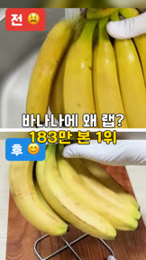
바나나에 왜 랩? 조회 183만 주방 꿀팁 TOP5영상 속 상품 5개
1위. 바나나 꼭지에 랩 감고 걸어 두기엠에스리빙 바나나걸이 2개 · 4,040원 (11월 24일) · 리뷰 2,407개
쿠팡 보기2위. 배달 온 은박 보냉백은 양념통 밑에코멧 은박 보냉팩 30개 · 7,000원 (11월 24일) · 리뷰 1,200개
쿠팡 보기3위. 밀가루 봉지에 페트병 입구 끼우기온유 봉지 캡 밀봉 마개 4개 · 7,630원 (11월 24일) · 리뷰 79개
쿠팡 보기4위. 소면 봉지는 옆을 잘라 고무줄로샘표 진공소면 900g 2개 · 6,360원 (11월 24일) · 리뷰 8,303개
쿠팡 보기5위. 냉동밥은 얼음 한 조각 올려 데우기뚝땁 냉동밥 보관용기 12개 · 10,800원 (11월 24일) · 리뷰 1,473개
쿠팡 보기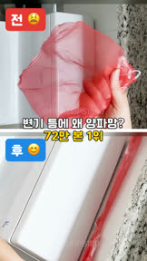
변기 틈에 왜 양파망? 조회 72만 청소 꿀팁 TOP5영상 속 상품 5개
1위. 양파망에 주방세제 묻혀 변기 틈 닦기살림백서 구연산 주방세제 4L · 7,680원 (11월 24일) · 리뷰 9,162개
쿠팡 보기2위. 양파망을 싱크대 거름망에 씌우기코멧 싱크대 거름망 500개 · 4,990원 (11월 24일) · 리뷰 20,984개
쿠팡 보기3위. 초파리 올라오는 구멍엔 냄새 트랩에스엠지 냄새제로 트랩 50mm · 13,400원 (11월 24일) · 리뷰 37,440개
쿠팡 보기4위. 전자레인지는 식초물 5분 돌리고 닦기오뚜기 양조 식초 1.8L 2개 · 3,960원 (11월 24일) · 리뷰 230,680개
쿠팡 보기5위. 새 스텐 팬은 베이킹소다로 연마제 닦기엄마의선택 베이킹소다 2kg · 4,300원 (11월 24일) · 리뷰 30,944개
쿠팡 보기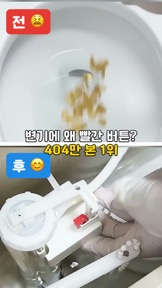
변기에 왜 빨간 버튼? 조회 404만 살림 꿀팁 TOP5영상 속 상품 5개
1위. 변기 물 약하면 물탱크 빨간 버튼 올려 부구 높이기하픽 청크린 변기세정제 2개 · 11,020원 (11월 25일)
쿠팡 보기2위. 종이가방 끈은 안쪽으로 매듭크라프트 무지 쇼핑백 중 50장 · 12,890원 (11월 25일)
쿠팡 보기3위. 꽉 묶인 비닐은 끝을 돌려 밀어 풀기에브리홈 두꺼운 롤백 3kg · 17,500원 (11월 25일)
쿠팡 보기4위. 빠진 바지 끈은 양쪽 고리로 끼우기밝은리빙 후드바지 끈 10개 · 5,300원 (11월 25일)
쿠팡 보기5위. 꽉 찬 쓰레기봉투는 손잡이 8자로 교차해 묶기국산 대형 쓰레기봉투 50L 100개 · 7,500원 (11월 25일)
쿠팡 보기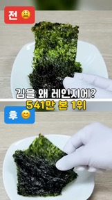
김을 왜 전자레인지에? 조회 541만 살림 꿀팁 TOP5영상 속 상품 5개
1위. 눅눅한 김은 전자레인지에 10초동원 양반 들기름김 20g 10봉 · 16,900원 (11월 25일)
쿠팡 보기2위. 참기름 뚜껑은 숟가락 끼워 지렛대로오뚜기 고소한 참기름 320ml · 8,810원 (11월 25일)
쿠팡 보기3위. 구겨진 셔츠는 물 살짝 뿌리고 드라이기블라우풍트 2400W 헤어드라이기 · 20,800원 (11월 25일)
쿠팡 보기4위. 남은 설탕 봉투는 불로 살짝 붙여 밀봉백설 하얀설탕 1kg · 2,210원 (11월 25일)
쿠팡 보기5위. 냉동밥 위에 얼음 한 조각 올려 3분에코센스 냉동밥 보관용기 450ml 4개 · 20,900원 (11월 25일)
쿠팡 보기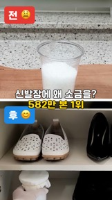
변기에 왜 소금을? 조회 582만 살림 꿀팁 TOP5영상 속 상품 5개
1위. 굵은 소금 컵에 키친타월 덮어 신발장에 두면 습기 제거신안 세척 천일염 굵은소금 3kg 3개 · 26,310원 (11월 25일)
쿠팡 보기2위. 모자는 지퍼백에 중성세제 풀어 10분어슬릭 중성 울세제 2.5L 4개 · 11,490원 (11월 25일)
쿠팡 보기3위. 파프리카는 꼭지를 눌러 쏙 빼기국내산 빨강·노랑 파프리카 1kg · 6,900원 (11월 25일)
쿠팡 보기4위. 양념통은 레일 수납함에 넣어 당겨 쓰기홈디메르 슬라이딩 레일 수납함 · 17,890원 (11월 25일)
쿠팡 보기5위. 고춧가루는 지퍼백+검은 봉지에 담아 냉동국산 태양초 고춧가루 1kg · 27,560원 (11월 25일)
쿠팡 보기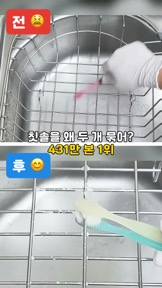
칫솔을 왜 두 개 묶어? 조회 431만 살림 꿀팁 TOP5영상 속 상품 5개
1위. 싱크대 거름망은 다 쓴 칫솔 두 개 묶어서살림백서 이중 미세모 칫솔 32개입 · 19,890원 (11월 25일)
쿠팡 보기2위. 욕실 대야는 벽에 걸이 붙여 걸어 두기착걸이 무타공 대야걸이 2개 · 11,900원 (11월 25일)
쿠팡 보기3위. 고무장갑은 뒤집어 식초 물에 20분마미손 고무장갑 XL 10개 · 22,800원 (11월 25일)
쿠팡 보기4위. 욕실 용품은 무타공 선반에 올려 물 안 고이게한평한뼘 무타공 욕실 선반 2개 · 19,900원 (11월 25일)
쿠팡 보기5위. 후드 필터는 비닐봉지에 세제+뜨거운 물 5분크로바 골드퐁 주방세제 13L · 10,750원 (11월 25일)
쿠팡 보기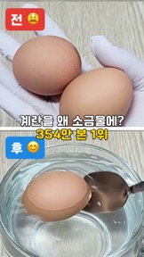
계란을 왜 소금물에? 조회 354만 살림 꿀팁 TOP5영상 속 상품 5개
1위. 계란은 소금물에 넣어 뜨면 상한 것백설 꽃소금 1kg · 1,900원 (11월 25일)
쿠팡 보기2위. 냉동만두는 물에 3분 담갔다 전자레인지비비고 왕교자 1.05kg · 9,800원 (11월 25일)
쿠팡 보기3위. 라면은 물 500, 면은 80% 익으면 건지기신라면 120g 5개 · 4,150원 (11월 25일)
쿠팡 보기4위. 짠 김장김치엔 무를 중간중간제주 월동무 세척 5kg · 13,000원 (11월 25일)
쿠팡 보기5위. 고추장은 숟가락 뒤쪽으로 뜨기해찬들 태양초 고추장 3kg · 15,010원 (11월 25일)
쿠팡 보기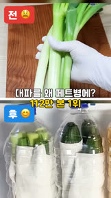
대파를 왜 페트병에? 조회 112만 살림 꿀팁 TOP5영상 속 상품 5개
1위. 대파는 키친타월 감아 페트병에코멧 천연펄프 키친타월 150매 8롤 · 5,990원 (11월 24일) · 리뷰 244,163개
쿠팡 보기2위. 불린 떡국떡에 계란 하나 풀기곰곰 쌀 떡국떡 1kg · 2,980원 (11월 24일) · 리뷰 86,535개
쿠팡 보기3위. 미나리는 식초 물에 10분오뚜기 양조 식초 1.8L 2개 · 3,960원 (11월 24일) · 리뷰 230,680개
쿠팡 보기4위. 감자는 소금 반 스푼 넣고 삶기밀양 수미 감자 2kg · 5,990원 (11월 24일) · 리뷰 26,046개
쿠팡 보기5위. 상부장 기름때엔 베이킹소다 + 소주엄마의선택 베이킹소다 2kg · 4,300원 (11월 24일) · 리뷰 30,944개
쿠팡 보기아직도 식은 밥? 직장맘 출근템 3가지영상 속 상품 3개
1. 피크르 304 스텐 보온도시락22,800원 (11월 20일) · 리뷰 8,591개 (11월 15일)
쿠팡 보기2. 클리나 원터치 보온보냉 텀블러 500ml9,900원 (11월 20일) · 리뷰 27,579개 (11월 15일)
쿠팡 보기3. LKOUY 충전식 6중날 보풀제거기14,900원 (11월 20일)
쿠팡 보기아직도 새벽에 깨요? 덜 깨는 겨울밤 3가지영상 속 상품 3개
1. 메이키즈 아동용 수면조끼10,900원 (11월 20일)
쿠팡 보기2. 한일 탄소열선 전기요 HL-D20529,970원 (11월 20일) · 리뷰 76,776개 (11월 15일)
쿠팡 보기3. 리틀그립 뒤집으면 꺼지는 수유등12,900원 (11월 20일)
쿠팡 보기변기에 왜 소금? 살림 꿀팁 TOP5영상 속 상품 5개
1위. 변기 물탱크에 굵은소금 · 청정원 천일염 굵은소금 1kg4,850원 (11월 19일)
쿠팡 보기2위. 지퍼에 바세린 · 바세린 프로텍팅 젤리 100ml 2개4,250원 (11월 19일)
쿠팡 보기3위. 만능세제 · 엄마의선택 베이킹소다 2kg5,300원 (11월 19일)
쿠팡 보기4위. 수도꼭지 식초물 · 오뚜기 양조 식초 1.8L2,580원 (11월 19일)
쿠팡 보기5위. 물티슈 뚜껑 · 자바락 탈부착 물티슈캡 3개5,150원 (11월 19일)
쿠팡 보기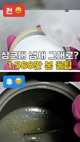
조회 1,568만 살림 꿀팁 TOP7영상 속 상품 1개
1. 유한젠 100% 과탄산소다 1kg5,360원 (11월 20일) · 1위 꿀팁에 쓰는 것
쿠팡 보기주부 리뷰 많은 겨울 살림템 TOP5영상 속 상품 5개
1위. 논슬립 옷걸이 10개 (코멧 홈 어깨 뿔 방지)7,900원 · 리뷰 57,893개 (11월 18일)
쿠팡 보기2위. 코멧 이불 압축팩 4개입 대형7,360원 · 리뷰 34,888개 (11월 17일)
쿠팡 보기3위. 듀플렉스 초음파 가습기 DP-9090UH35,800원 · 리뷰 26,390개 (11월 19일)
쿠팡 보기4위. 코멧 홈 접이식 대형 빨래건조대15,960원 · 리뷰 22,473개 (11월 18일)
쿠팡 보기5위. 울샴푸 다운워시 800ml8,770원 · 리뷰 17,065개 (11월 17일)
쿠팡 보기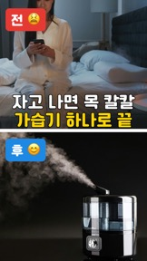
아직도 가습기 안 틀고 자요? 듀플렉스 가습기영상 속 상품 1개
1. 듀플렉스 초음파 가습기 DP-9090UH35,800원 · 리뷰 26,390개 (11월 19일)
쿠팡 보기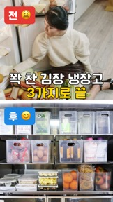
더 빨리 알았으면 냉장고 정리 3가지영상 속 상품 3개
1. 실리쿡 롱하프 트레이 4개18,900원 · 리뷰 2,513개 (11월 19일)
쿠팡 보기2. 코멧 키친 심플 서랍형 에그트레이 32구6,590원 · 리뷰 8,100개 (11월 19일)
쿠팡 보기3. 탐사 트리플 냉장고 탈취제 300ml 2개5,390원 · 리뷰 46,376개 (11월 19일)
쿠팡 보기리뷰 24만 개 고구마 간식 3가지영상 속 상품 3개
1. 국내산 햇 꿀고구마 1.5kg7,990원 · 리뷰 240,656개 (11월 19일)
쿠팡 보기2. 고구마공장 아이스 군고구마(냉동) 120g 8개16,200원 · 리뷰 10,955개 (11월 19일)
쿠팡 보기3. 코멧 에어프라이어 종이호일 대형 23cm 150개6,990원 · 리뷰 14,987개 (11월 19일)
쿠팡 보기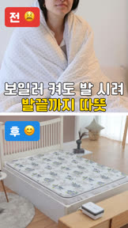
아직도 보일러만 켜고 자요? 온수매트영상 속 상품 1개
1. 일월 숲속애 온수매트 더블124,100원 · 리뷰 10,799개 · 한 달간 2,000명 이상 구매 (11월 18일)
쿠팡 보기전자레인지 청소, 덮개 하나로 끝영상 속 상품 1개
히키스 전자레인지 돔형 푸드커버4,170원 · 리뷰 7,968개 (11월 18일)
쿠팡 보기겨울 실내 빨래 안 꿉꿉하게 3가지영상 속 상품 3개
1. 코멧 홈 접이식 대형 빨래건조대15,960원 · 리뷰 22,473개 (11월 18일)
쿠팡 보기2. 코멧 홈 어깨 뿔 방지 논슬립 옷걸이 10개7,900원 · 리뷰 57,893개 (11월 18일)
쿠팡 보기3. 아이리스 저소음 컴팩트 써큘레이터23,670원 · 리뷰 13,633개 (11월 18일)
쿠팡 보기안 쓰면 고생하는 설거지템 3가지영상 속 상품 3개
1. 달팽이리빙 퀴진드마망 실리콘 싱크대 물막이9,500원 · 리뷰 10,997개 (11월 18일)
쿠팡 보기2. 크리넥스 빨아쓰는 위생행주 45매 2개6,550원 · 리뷰 48,122개 (11월 18일)
쿠팡 보기3. 스크럽대디 수세미 3개입15,200원 · 리뷰 4,712개 (11월 18일)
쿠팡 보기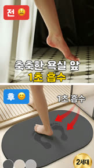
씻고 나온 바닥, 1초 흡수 발매트영상 속 상품 1개
1. 홈싹 빨아쓰는 규조토 발매트5,990원 · 리뷰 1,150개 (11월 17일)
쿠팡 보기겨울 이불 꺼낼 때 장롱 비우는 3가지영상 속 상품 3개
1. 코멧 이불 압축팩 4개입 대형7,360원 · 리뷰 34,888개 (11월 17일)
쿠팡 보기2. 세플로 침대패드 고정밴드 4개8,620원 · 리뷰 914개 (11월 17일)
쿠팡 보기3. 틴도우 침구청소기 2026년형89,900원 · 리뷰 466개 (11월 17일)
쿠팡 보기
아이 패딩 빨래, 세탁소 안 가는 3가지영상 속 상품 3개
1. 울샴푸 다운워시 800ml8,770원 · 리뷰 17,065개 (11월 17일)
쿠팡 보기2. 코멧 홈 양모 울드라이어볼 6p6,990원 · 리뷰 4,679개 (11월 17일)
쿠팡 보기3. 코멧 홈 메쉬 사각 세탁망 65x73 2개8,570원 · 리뷰 2,994개 (11월 17일)
쿠팡 보기
아이 방 외풍 안 쓰면 고생하는 3가지영상 속 상품 3개
1. 바로문풍지 우레탄 3m 5개6,830원 · 리뷰 23,264개 (11월 15일)
쿠팡 보기2. 컴바이미 무압박 수면양말 4켤레8,900원 · 리뷰 4,020개 (11월 15일)
쿠팡 보기3. 한일 탄소열선 전기요 M29,900원 · 리뷰 76,776개 (11월 15일)
쿠팡 보기김장하는 엄마들 미리 사 둔 3가지영상 속 상품 3개
1. 토토비즈 다용도 김장매트7,800원 · 리뷰 2,619개 (11월 15일)
쿠팡 보기2. 우진크린라이프 김장봉투 특대형 10장5,000원부터 · 리뷰 10,104개 (11월 15일)
쿠팡 보기3. 라쿠친 국민채칼5,340원 · 리뷰 4,463개 (11월 15일)
쿠팡 보기
수험생 엄마들 수능 날 챙긴 3가지영상 속 상품 3개
1. 피크르 304 스텐 보온도시락 4단22,800원 · 리뷰 8,591개 (11월 15일)
쿠팡 보기2. 코멧 양면 극세사 블랭킷4,890원부터 · 리뷰 13,451개 (11월 15일)
쿠팡 보기3. 클리나 원터치 보온보냉 텀블러 500ml8,900원 · 리뷰 27,579개 (11월 15일)
쿠팡 보기신생아 엄마들 밤잠 지켜 준 3가지영상 속 상품 3개
1. 뻥코III+ 유아용 수동 콧물흡입기 2개7,500원 · 한 개 3,750원 · 리뷰 1,340개 (11월 14일)
쿠팡 보기2. REDBEAN 아기 네일트리머12,900원 · 리뷰 5,144개 (11월 14일)
쿠팡 보기3. 리틀그립 뒤집으면 꺼지는 수유등12,900원 (11월 14일)
쿠팡 보기
엄마들 겨울 걱정 덜어 준 3가지영상 속 상품 3개
1. 베리크린 김서림방지제 200ml18,900원 (11월 12일)
쿠팡 보기2. 타이글 신발탈취제 500ml 2개11,900원 · 한 병 5,950원 (11월 12일)
쿠팡 보기3. 메이키즈 아동용 트리플카 수면조끼10,900원 · 리뷰 1,087개 (11월 14일)
쿠팡 보기
욕실 냄새·물막힘 끝내는 것 3가지영상 속 상품 3개
1. 살림백서 배수구클리너 600g 2개10,960원 · 38% 할인 · 리뷰 18,972개 (11월 14일)
쿠팡 보기2. 퓨어온 수압상승 필터 샤워헤드 + 필터 12개16,900원 · 66% 할인 · 리뷰 543개 (11월 14일)
쿠팡 보기3. 오브메이트 배수구 냄새차단 트랩 2개7,900원 · 84% 할인 · 리뷰 101개 (11월 14일)
쿠팡 보기
엄마들 집안일 확 줄여 준 살림꿀템 3가지영상 속 상품 3개
1. 모스트픽 기모안감 목 긴 고무장갑 3개10,200원 · 54% 할인 · 리뷰 2,660개 (11월 14일)
쿠팡 보기2. 한입 100% 구연산 1kg6,780원 · 31% 할인 · 리뷰 17,869개 (11월 14일)
쿠팡 보기3. 세탁조 클리너 발포정 12개6,000원 · 71% 할인 · 리뷰 4,981개 (11월 14일)
쿠팡 보기
엄마들 겨울 옷 걱정 덜어 준 3가지영상 속 상품 3개
1. LKOUY 충전식 6중날 보풀제거기14,900원 · 84% 할인 · 리뷰 6,798개 (11월 14일)
쿠팡 보기2. 아모르주 양털 체크 수면바지 2장18,890원 · 51% 할인 · 리뷰 177개 (11월 14일)
쿠팡 보기3. 정전기 방지 키홀더 CAR-K01 2개4,900원 · 28% 할인 · 리뷰 1,829개 (11월 14일)
쿠팡 보기겨울 준비
겨울 결로·곰팡이 잡는 것 3가지영상 속 상품 3개
1. 결로방지 물흡수 테이프 10cm × 5m8,760원 · 49% 할인 (11월 12일)
쿠팡 보기2. 바르는 실리콘 곰팡이 제거젤 200ml11,600원 · 73% 할인 (11월 12일)
쿠팡 보기3. 습기제거제 블랙체리향 280g × 27개17,420원 · 한 통 645원 · 50% 할인 (11월 15일)
쿠팡 보기빨리 알았으면 좋았을 겨울템 3가지영상 속 상품 3개
1. 붙이는 핫팩 50개8,770원 · 56% 할인
쿠팡 보기2. 3중 단열 뽁뽁이 100cm×10m8,890원 · 18% 할인
쿠팡 보기3. 스팀 온열안대 40개7,920원 · 84% 할인
쿠팡 보기미리 알면 좋았을 겨울 집꿀템 3가지영상 속 상품 3개
1. 겨울 털 슬리퍼9,900원 · 50% 할인
쿠팡 보기2. 바세린 풋크림 55g × 2개7,880원 · 50% 할인
쿠팡 보기3. 초음파 가습기 4L23,900원 · 51% 할인
쿠팡 보기만 원 안 되는 겨울 필수템 7가지영상 속 상품 7개
1. 수면양말 5켤레6,900원 · 한 켤레 1,380원
쿠팡 보기2. 터치되는 방한장갑6,800원 · 65% 할인
쿠팡 보기3. 붙이는 핫팩 50개9,370원 · 한 개 187원
쿠팡 보기4. 충전식 손난로8,140원 · 보조배터리 겸용
쿠팡 보기5. 양털 실내화7,890원 · 53% 할인
쿠팡 보기6. 체크 목도리9,900원 · 66% 할인
쿠팡 보기7. 극세사 담요8,900원 · 81% 할인
쿠팡 보기붙이는 핫팩 50개 9,190원영상 속 상품 1개
쏘핫 장시간 프리미엄 붙이는 핫팩 50개9,190원
쿠팡 보기양털 체크 수면바지 2장영상 속 상품 1개
아모르주 양털 체크 수면바지 2장18,890원 · 정가 38,610원 · 한 장 9,445원
쿠팡 보기바세린 풋크림 2개 7,880원영상 속 상품 1개
바세린 딥 모이스처 풋크림 55g 2개7,880원
쿠팡 보기자취·집
자취방 삶의 질 올리는 것 7가지영상 속 상품 7개
1. 배수구 클리너 2통10,970원 · 한 통 5,485원
쿠팡 보기2. 필터 샤워기+필터 12개16,900원 · 필터 1년 치
쿠팡 보기3. 소음차단 귀마개6,900원 · 82% 할인
쿠팡 보기4. 충전식 보풀제거기14,900원 · 84% 할인
쿠팡 보기5. 양털 수면바지 2장18,890원 · 한 장 9,445원
쿠팡 보기6. 양털 실내화7,890원 · 바닥 찬 집용
쿠팡 보기7. 바세린 풋크림 2개7,000원 · 하나 3,500원
쿠팡 보기배수구 클리너 600g 2통영상 속 상품 1개
살림백서 배수구클리너 600g 2개10,970원 · 한 통 5,485원 · 38% 할인
쿠팡 보기필터 샤워헤드 + 필터 12개영상 속 상품 1개
퓨어온 수압상승 필터샤워헤드+필터 12개16,900원
쿠팡 보기직장인
사무실 책상에 두면 편한 것 7가지영상 속 상품 7개
1. 극세사 무릎담요8,900원 · 에어컨·히터 바람용
쿠팡 보기2. 메모리폼 목베개9,900원 · 점심 낮잠용
쿠팡 보기3. 미니 가습기18,800원 · 무선 500ml
쿠팡 보기4. 스팀 온열안대 40개8,000원 · 한 장 200원
쿠팡 보기5. 완전밀폐 텀블러19,900원 · 빨대·세척솔 포함
쿠팡 보기6. 퍼퓸 핸드크림3,900원 · 78% 할인
쿠팡 보기7. 보온도시락 2단17,800원 · 이틀이면 본전
쿠팡 보기스팀 온열안대 40개 8,000원영상 속 상품 1개
온월담 스팀 온열안대 40개입8,000원
쿠팡 보기전자기기
갤럭시탭 S12 울트라 모델 고르기 · 노트북·폰 ›찾는 물건이 아직 없어요 😅
다른 말로 찾아보거나 전체를 눌러 보세요.
다른 말로 찾아보거나 전체를 눌러 보세요.